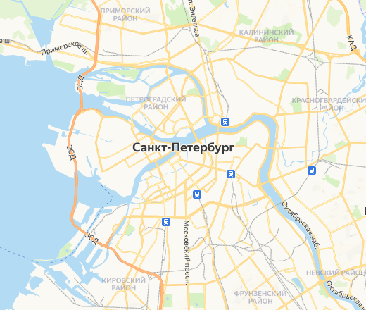
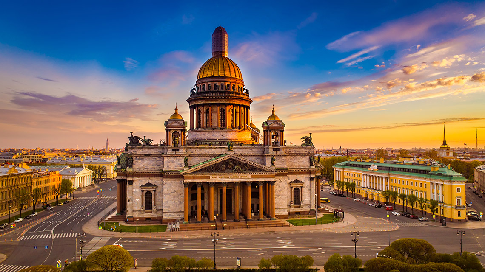
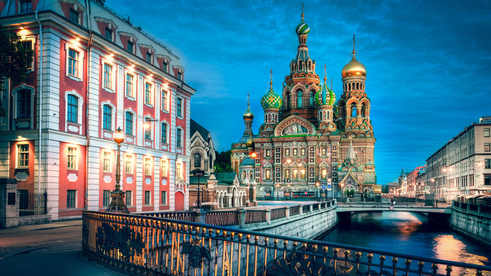
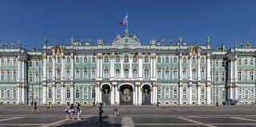
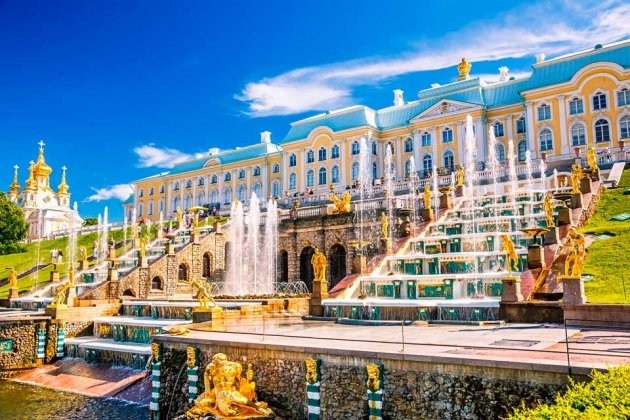
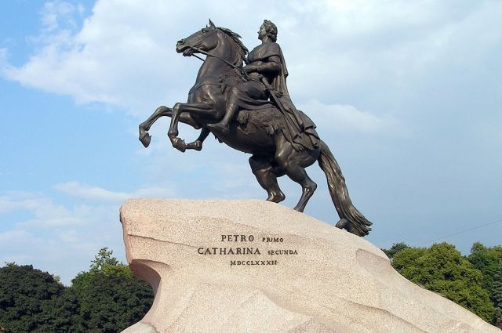
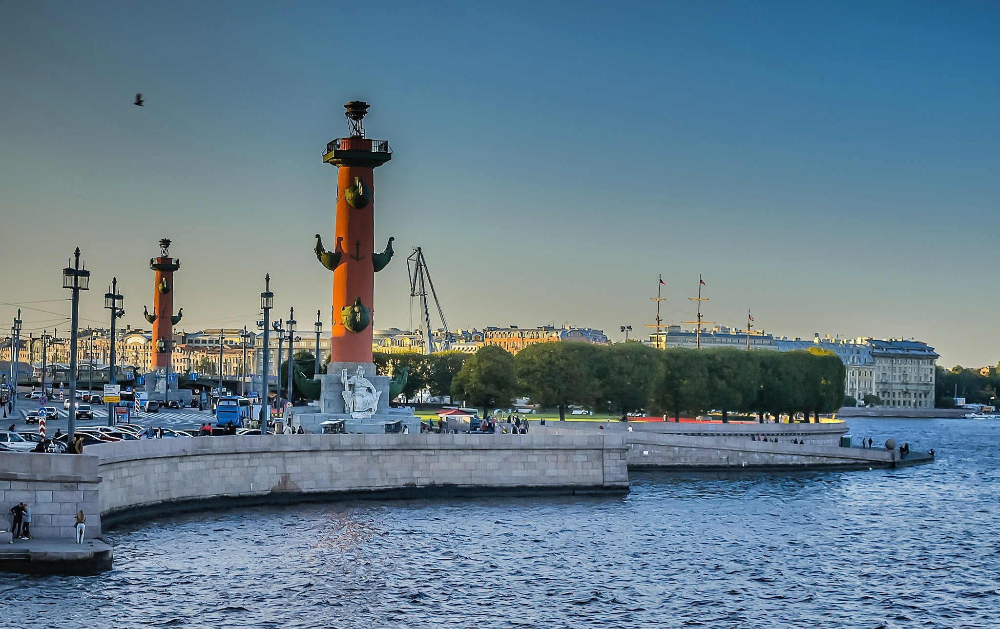
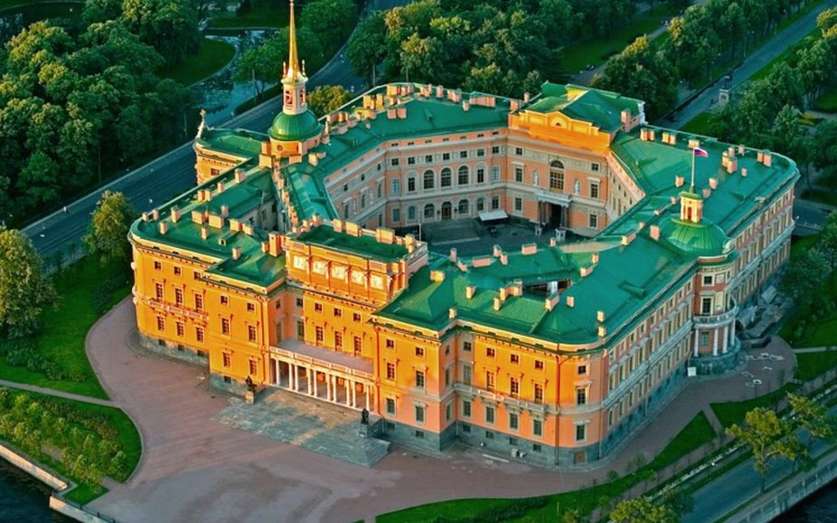
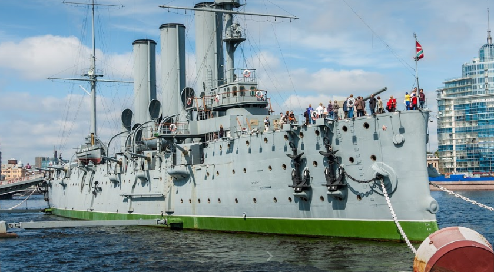

| Фото достопримечательности | Описание |
|---|---|
|  | Исаакиевский собор- крупнейший православный храм Санкт-Петербурга. |
|  | Спас-на-крови- православный мемориальный однопрестольный храм во имя Воскресения Христова; сооружён в память того, что на этом месте 1 марта 1881 года в результате покушения был смертельно ранен император Александр II. |
|  | «Госуда́рственный Эрмита́ж» — музей изобразительного и декоративно-прикладного искусства, расположенный в городе Санкт-Петербурге Российской Федерации. Основан 7 декабря 1764 года. Является одним из крупнейших художественных музеев в мир |
|  | Петергоф-дворцово-парковый ансамбль на южном берегу Финского залива.Часть его находится в ведении Государственного музея-заповедника «Петергоф» |
|  | Медный всадник — памятник Петру I на Сенатской площади в Санкт-Петербурге работы скульптора Фальконе. Его открытие состоялось 7 августа 1782 года. Памятник изготовлен из бронзы. Название «медный» закрепилось за ним благодаря поэме А. С. Пушкина «Медный всадник» |
| Казанский собор-один из крупнейших храмов Санкт-Петербурга. Построен на Невском проспекте в 1801—1811 годах архитектором Андреем Воронихиным в стиле русского классицизма для хранения чтимого списка чудотворной иконы Божией Матери Казанской |
|  | Стрелка Васильевского острова — мыс на восточной оконечности Васильевского острова в Санкт-Петербурге, омываемый Большой Невой и Малой Невой; один из самых известных архитектурных ансамблей города; пример гармонии архитектуры города с пейзажем берегов Невы. |
| Петропавловская крепость-старейший памятник архитектуры Санкт-Петербурга, крепость I класса (согласно классификации крепостей Российской Империи). Расположена на Заячьем острове, в Санкт-Петербурге, историческое ядро города. |
|  | Михайловский, или Инженерный замок — бывший императорский дворец в центре Санкт-Петербурга по адресу Садовая ул., № 2, на рубеже XVIII—XIX веков построенный как замок на воде по заказу императора Павла I и ставший местом его смерти |
|  | Авро́ра — крейсер 1-го ранга Балтийского флота типа «Диана». Назван в честь парусного фрегата «Аврора», прославившегося при обороне Петропавловска-Камчатского в годы Крымской войны. Во время русско-японской войны участвовал в походе Второй Тихоокеанской эскадры, закончившемся Цусимским сражением |